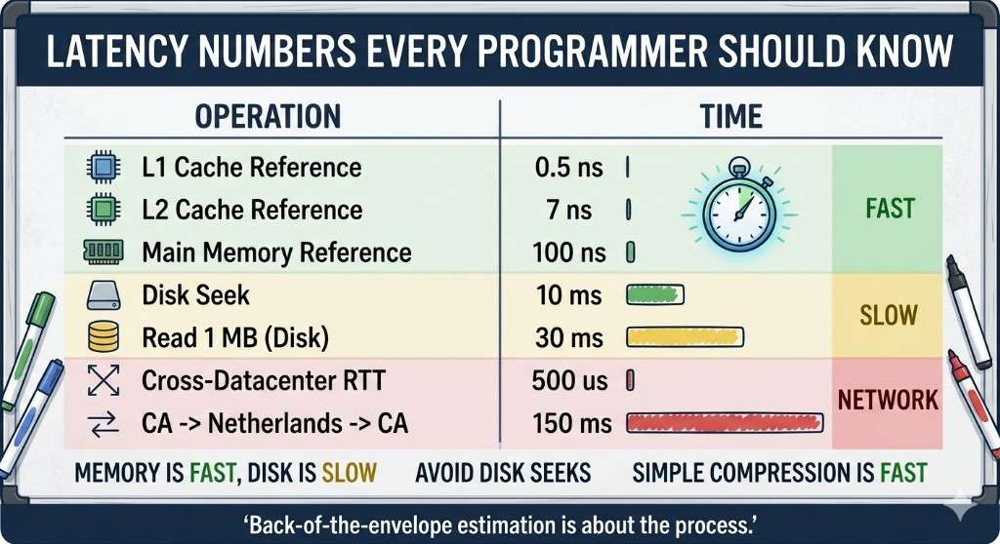

المدونة
رؤى تقنية، وتطوير الواجهات الخلفية، وملاحظات في هندسة البرمجيات.
-
لماذا لا يكفي الكود الجيد وحده؟ أساسيات التواصل للمبرمجين ومعماريي البرمجيات
الفهم المشترك، الأنماط والأنماط المضادة، خلط مستويات التجريد، ونبوءة القبول — من كتاب Communication Patterns لجاكي ريد. المقال متاح بالعربية والإنجليزية معًا.
-
مشكلة العلاقات في Laravel متعدد قواعد البيانات: لماذا يقرأ الـ Eager Load من قاعدة خاطئة
سلوك دقيق في Eloquent داخل التطبيقات متعددة قواعد البيانات: النماذج المرتبطة قد ترث اتصال النموذج الأب أثناء الـ eager loading. يتضمن الحل في سطر واحد وقائمة بتأثيره على الاختبارات.
-
مشكلة الصف الشبح: Laravel Octane مع Swoole في Kubernetes
كيف تُبقي اتصالات Swoole الدائمة معاملات وهمية حيّة فتضيع عمليات INSERT بصمت، مع حلول عملية وآمنة للإنتاج.
-

إزاي تحسب الـ System Capacity في ثواني؟ (Back-of-the-envelope) 🧮
ثوابت القوى، الـ Latency، الـ Availability، ومثال تويتر — تقدير سريع للسعة قبل ما ترسم الـ architecture في إنترفيو System Design.
-
ما وراء الـ SOLID: بناء مكوّنات تدوم سنوات
قواعد مكوّنات الـ Clean Architecture: التماسك (REP، CCP، CRP) والترابط (ADP، SDP، SAP). المقال متاح بالعربية والإنجليزية معًا.
-
معمارية التقنية المالية واللوجستيات: مخطط جاهز للإنتاج
معمارية مرجعية جاهزة للإنتاج لـ Laravel و Vue و Flutter: الخدمات المصغّرة، والـ DDD، والتنسيق القائم على الأحداث، والسياقات المحدودة، ومخططات قابلة للنشر.
-
لماذا تفشل الشركات في إدارة المطورين؟ (تحليل علمي)
تحليل علمي: Design Stamina Hypothesis، الديون التقنية، تأثير دانينغ-كروجر، والعدالة التنظيمية. حلول: DoR، Blameless Post-mortems، Evidence-based Management.
-
لماذا تنهار الخوادم؟ مشكلة الاتصال بقاعدة البيانات
الإفراط في استخدام "new DatabaseConnection()" قد يفتح 1000 اتصال لـ 1000 مستخدم. نمط الـ Singleton يوفّر الذاكرة ويُبقي خادمك حيًّا.
-
دليل التميّز التشغيلي: من الفوضى إلى هندسة قابلة للتوسّع
دليل للانتقال من الفوضى إلى التميّز الهندسي: هندسة المتطلبات، ودورة حياة منهجية، وثقافة بلا لوم، ومقاييس DORA، وإدارة الديون التقنية.
-
14 مقالًا في تصميم الأنظمة لتطوير مهاراتك
قراءات أساسية لمهندسي البرمجيات: المصادقة، وOAuth2/JWT، والتخزين المؤقت، وقواعد البيانات، والأنظمة الموزّعة، ونصائح مقابلات تصميم الأنظمة.
-
مبادئ تصميم واجهات RESTful
أفضل الممارسات لبناء واجهات برمجية متسقة وقابلة للصيانة: الأسماء بدل الأفعال، ورموز الحالة، والإصدارات، والتقسيم إلى صفحات.
-
مرحبًا بك في مدونتي
مقدمة قصيرة عن هذه المساحة. سأشارك هنا أفكارًا حول معمارية الواجهات الخلفية، وLaravel، وPHP، وتصميم الأنظمة، ودروسًا من بناء أنظمة إنتاجية عبر العقد الماضي.